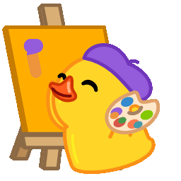
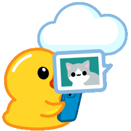

ISO прямо в приложении
Windows 11 с сайта Microsoft. Ubuntu, Debian, Mint, Fedora и другие — из встроенного каталога.
ВАШ MAC. ВАШ USB.
Создавайте загрузочные флешки Windows, Linux и FreeDOS. Выберите образ, подключите USB — остальное сделает Mafus.
Проверяем последний релиз…
macOS 14+ · Бесплатно · Открытый код

Маленький инструмент.ОБРАЗ СИСТЕМЫ
USB-НАКОПИТЕЛЬ
Данные на выбранном USB будут стёрты
Иллюстрация интерфейса · запись выполняется в приложении
Windows 11 с сайта Microsoft. Ubuntu, Debian, Mint, Fedora и другие — из встроенного каталога.
Параметры установки Windows. Linux Persistence. Проверка данных после записи.
Нативный SwiftUI, Liquid Glass на macOS 26 и интерфейс на 24 языках.

Экспериментальный выпуск. Локальная подпись, без notarization. Совместимость и ограничения ↗